Public Service Commission
Table of Contents
1. PSC - Piyush Chataut
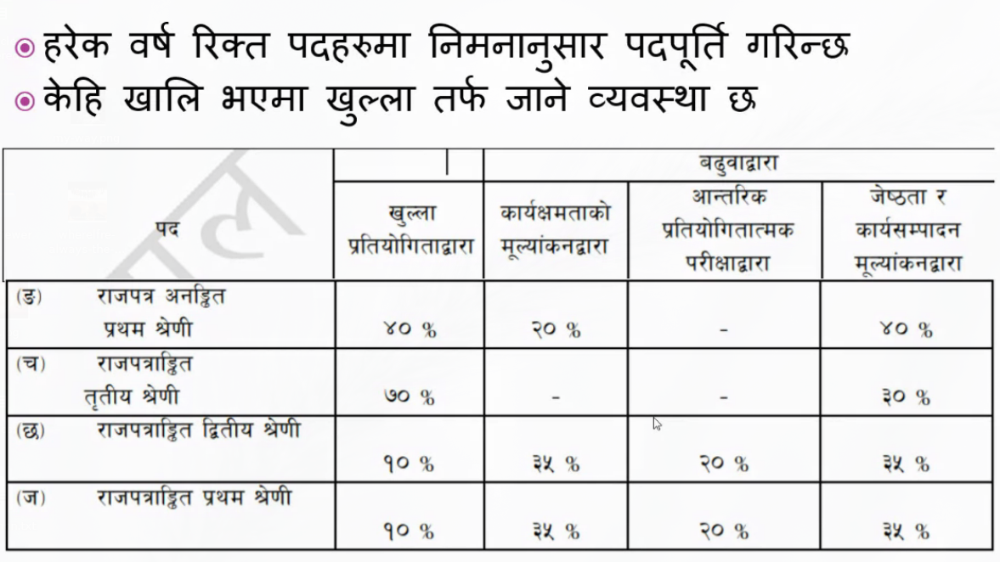
Figure 1: quotas
- Subengineer : not gazzetted
- Third class : engineer
- Second class : DE
- First class : Superintedent
Khull pratiyogita ko 45% khull, 55% qota
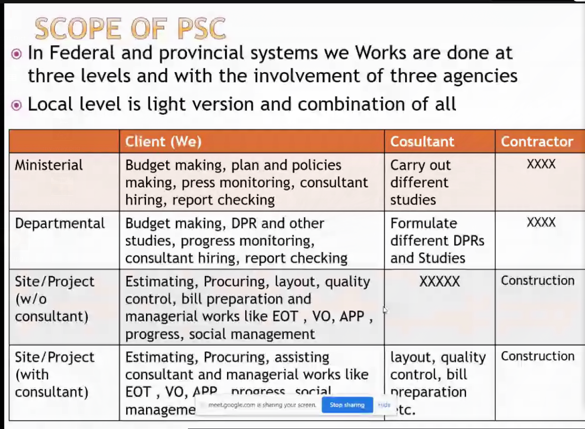
Figure 2: Scope of PSC
We work at three level : Federal, Province, Local.
- Ministry : site
- Department : does study,
- Site : (if nepal govt. ko project : consultant is gov, else foriegn project ko ma consultant hire hunxa.)
- social management (major work too)
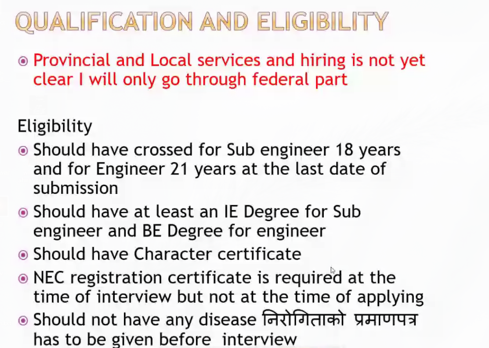
Figure 3: Qualification
1.1. Exam
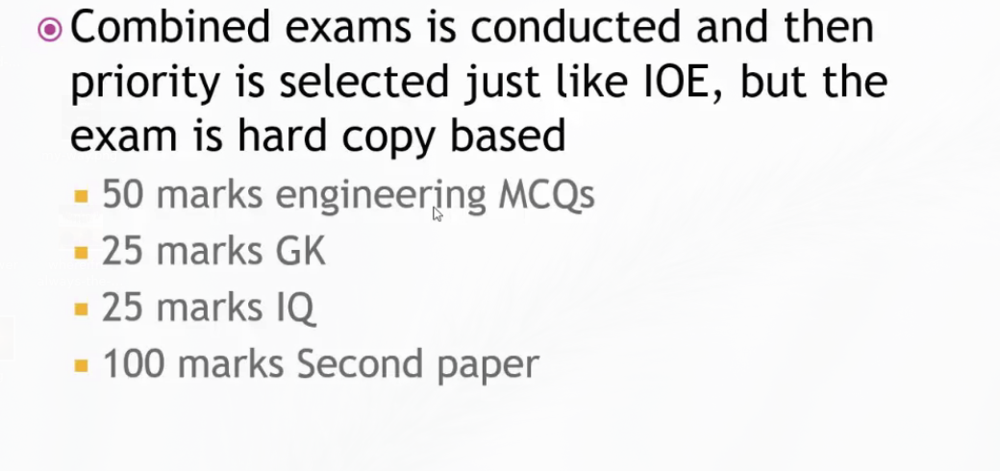
Figure 4: qn
- First paper : 50+25+25
- Second paper : Theory of engineering (about every topic)
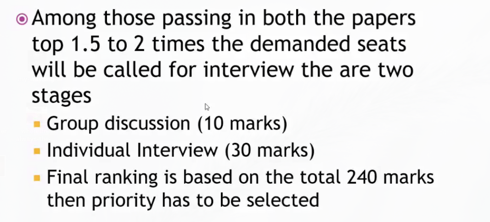 Group discussion montiored by:
- Psychiatrist
- Engineer
- ..
- ..
1.2. Further study
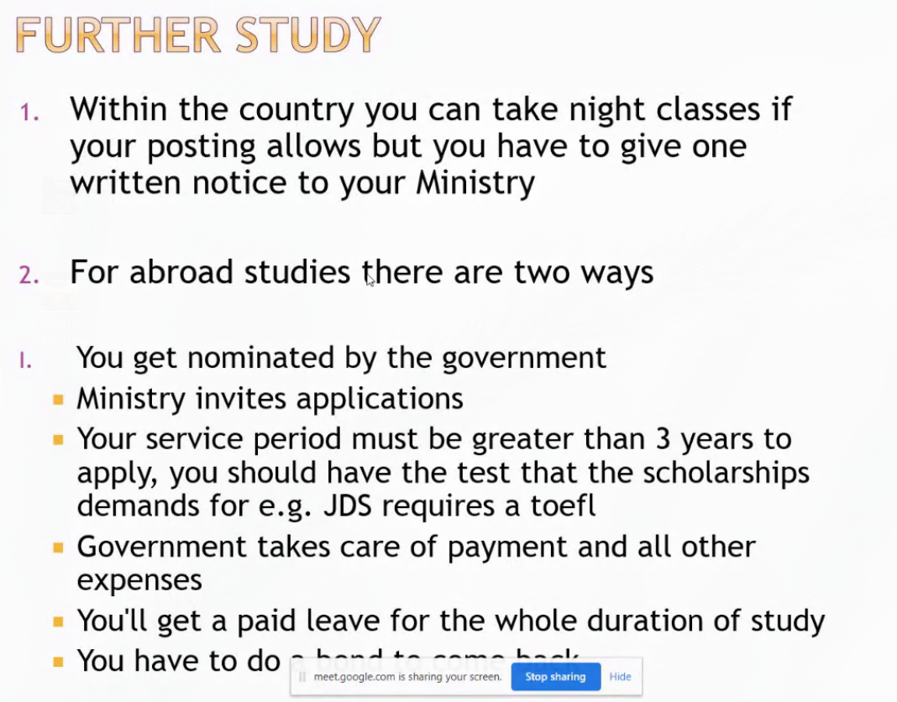
Figure 5: classes
- for night classes no problem
- for scholorship, the ministry sent (3 years experience required;) ; some scholarship require extra req. (e.g. Japan asks for TOFEL) ; you get your salary, but have to serve for 2 years
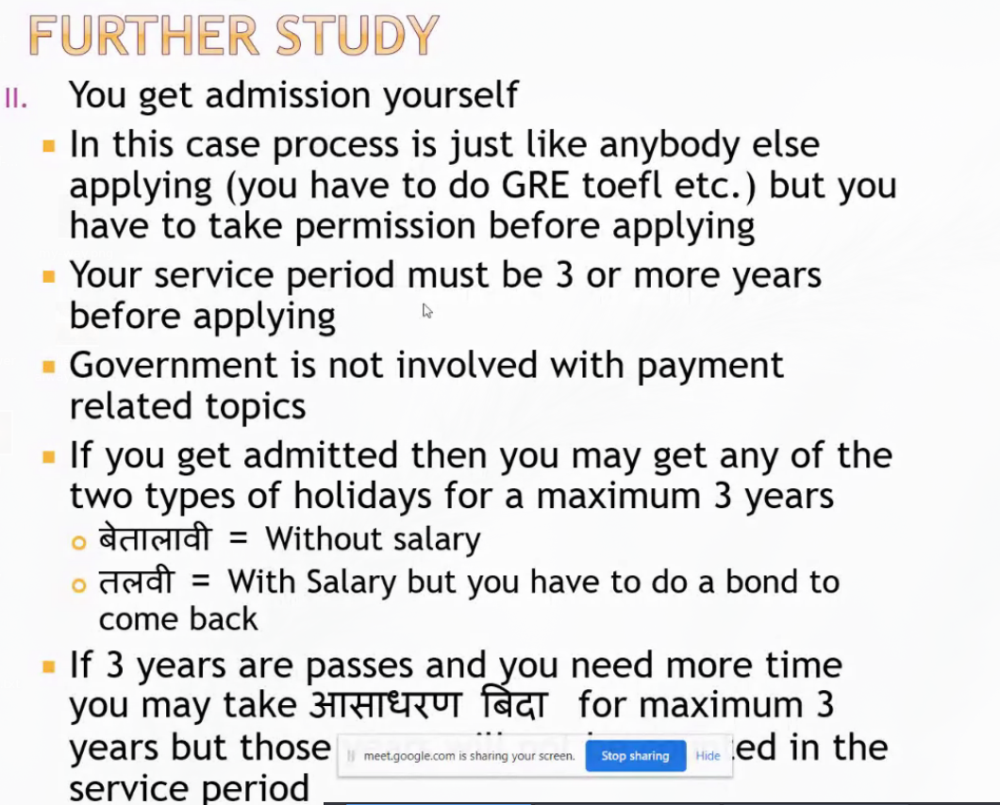�
- for yourself you have to ask the ministry or your senior : permission is mostly guranteed
Daroga Prasad Shah : D Prasad Shah m
1.3. Notes
2. After BE - Sakhil Manandhar
- Kina padheko!, ENginer!!
- Kata gayepar k hunxa
- Ramro progress lai k chainxa
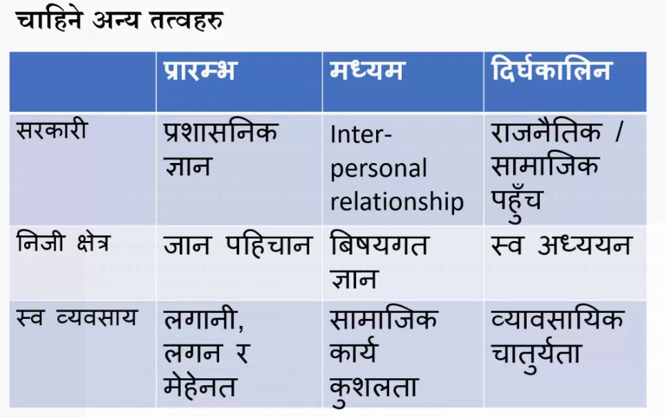
Figure 6: Requirement
Ka (Active earth pressure)
- Water Ka = ? 0
- Iron Ka = ?
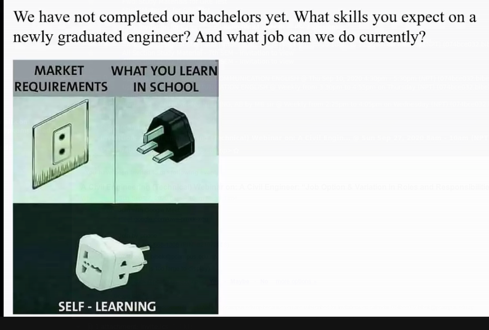
Figure 7: expectation vs reality
Investment Opportunity:
- Pile integrity machine
- Concrete core cutter
- new tech.
3. Foreign Study - Binod Tiwari
Study Abroad : Journey From Pulchowk Campus To USA
3.1. Why Study Abroad
- Cultural competency
- making friends globally - expanding global network
- making yourself independent in global context
- travelling to new place in the world
- enhancing job prospect in global market
- securing better livign with enhanced job security
- USA provides ocean of opportunities - learning new tech during study and good job prospect after receiving degree
3.2. Highly ranked civil engineering programs
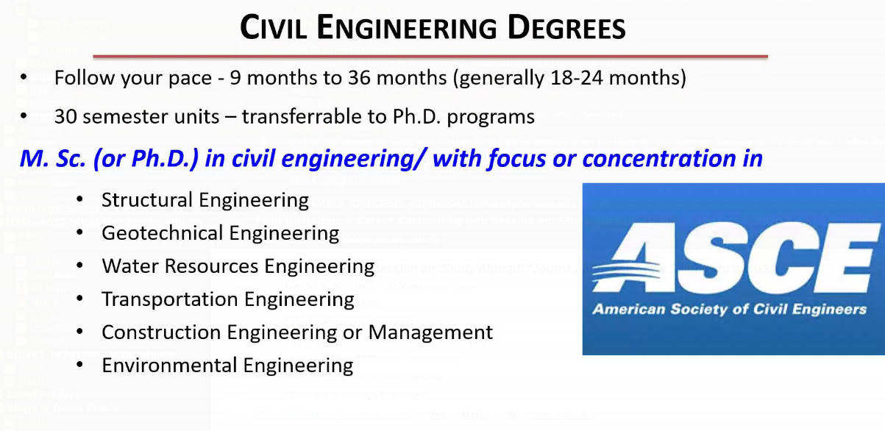 3.5 - 3.6 GPA is good
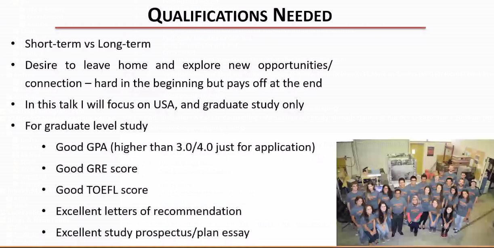
Figure 8: Qualification
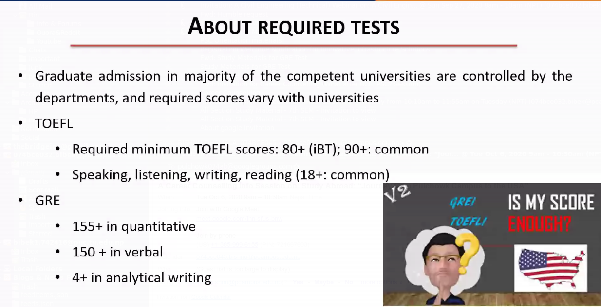
- Full bright scholorship
- Research Assistant
- Teaching Assistant
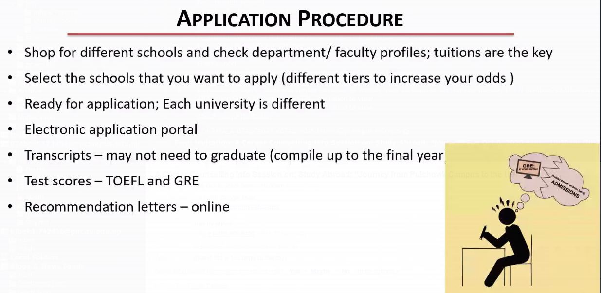
Figure 9: Application Procedure
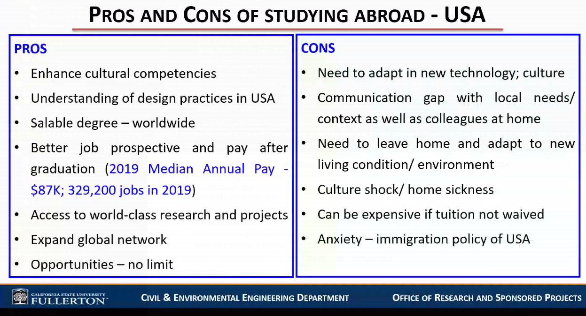
Figure 10: pros and cons
- Cons
- May miss opportunities aviailable at home
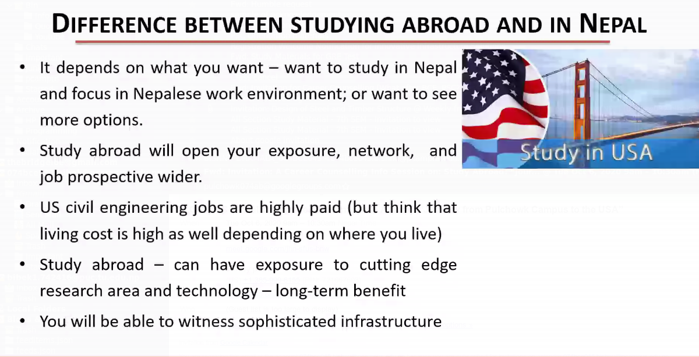
Figure 11: differences
- 170 quantitative GRE
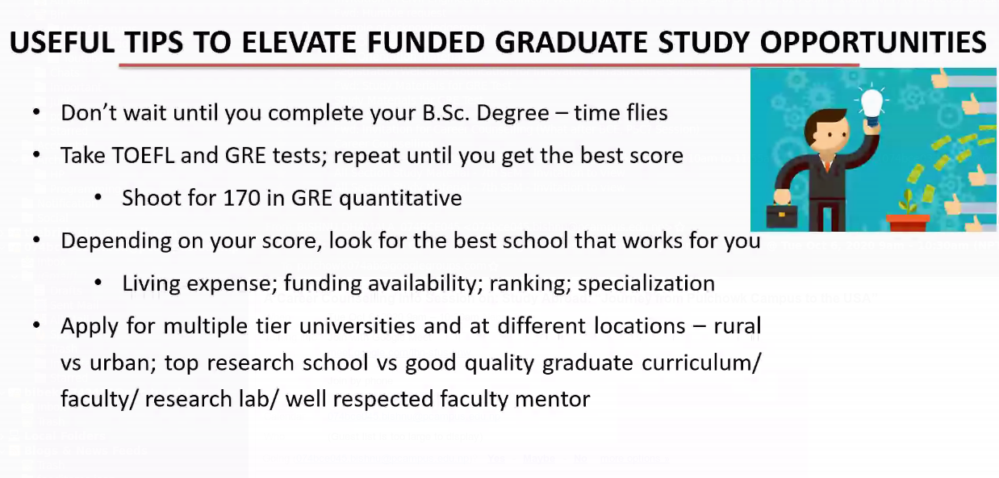
Figure 12: tips
- contact professors and tell them what attribute you have
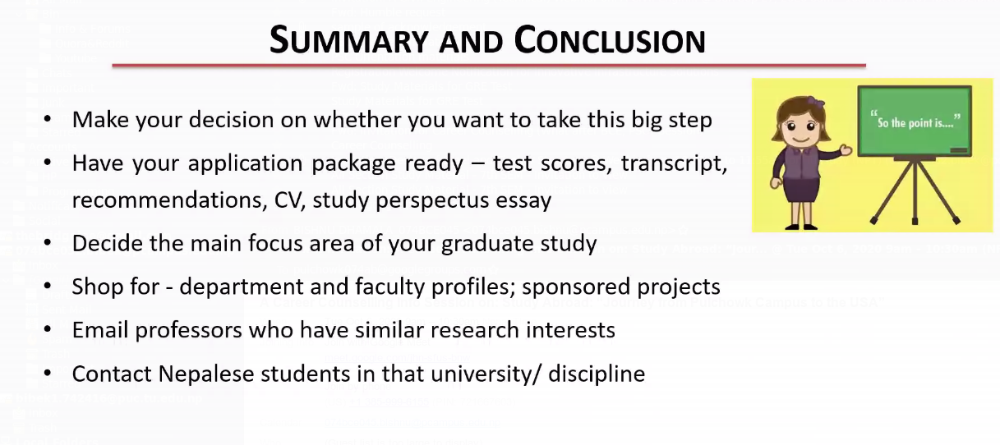
Figure 13: summary